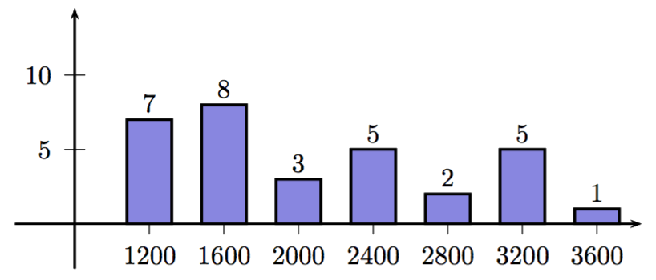

Voici un *{bold::diagramme en boîte} d'une série statistique :
L'axe est gradué régulièrement de sorte que l'on puisse y faire figurer la valeur minimale ($min$), la valeur maximale ($max$), le premier quartile ($Q_1$), le troisième quartile ($Q_3$) et la médiane ($m$).
$\bullet$ l'*{bold::intervalle interquartile} correspond à $[Q_1;Q_3]$.
$\bullet$ l'*{bold::écart interquartile} correspond à $Q_3-Q_1$.
Dans un supermarché, à la caisse "moins de $10$ articles", on relève le nombre d'articles de $65$ clients pris au hasard :
Nombre d'articles & $2$ & $3$ & $4$ & $5$ &$6$ &$7$ & $8$ & $10$ ||
Nombre de clients & $3$ & $5$ & $10$ & $15$ &$22$ &$8$ & $1$ & $1$
Déterminer les quartiles $Q_1$ et $Q_3$ et la médiane $m$ de cette série.
Tracer le diagramme en boîte de cette série statistique.
Loïc, $30$ ans, a toujours aimé les jeux vidéo. Ces $10$ dernières années, le nombre de jeux qu'il a acheté par an est donnée par la série suivante, classée chronologiquement :
$$ 5;6;10;11;12;7;3;2;1;0$$
Déterminer les quartiles $Q_1$ et $Q_3$ et la médiane $m$ de cette série.
Tracer le diagramme en boîte de cette série statistique.
De quel phénomène important le diagramme en boîte de rend-il pas compte ?
Proposer une représentation graphique rendant compte de phénomène.
Nicolas a deux classes de $1^{re} S$ auxquelles il a donné exactement la même évaluation, notée sur $10$.
Note & $1$ & $2$ & $3$ & $4$ &$5$ &$6$ & $7$ & $8$ & $9$ & $10$ ||
Effectifs $1^{re} S\;1$& $5$ & $4$ & $0$ & $0$ &$3$ &$1$ & $6$ & $5$ & $6$ & $5$ ||
Effectifs $1^{re} S\;2$& $0$ & $3$ & $2$ & $6$ &$8$ &$4$ & $5$ & $2$ & $0$ & $1$
Déterminer le nombre d'élèves pour chaque classe.
Tracer les diagrammes en boîte des deux séries statistiques sur le même graphique.
Comparer ces deux classes.
Voici les salaires pratiqués dans une entreprise (en ordonnée le nombre de personnes et en abscisse le salaire ):
|  |
Déterminer le nombre de personnes salariées dans cette entreprise.
Tracer le diagramme en boîte de cette série statistique.
|